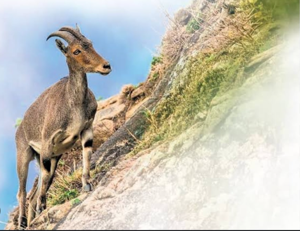
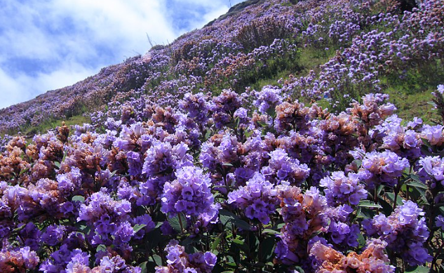
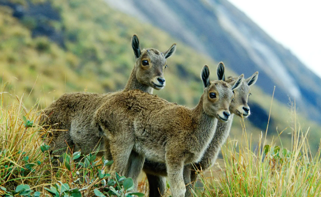
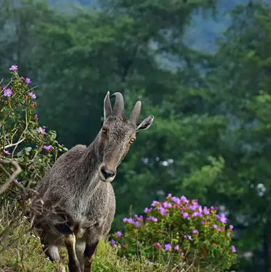
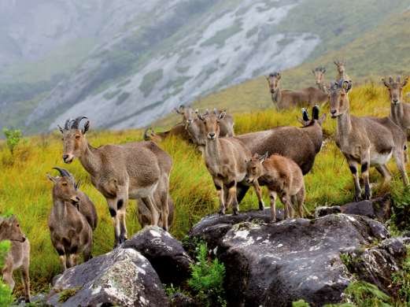

Eravikulam National Park is a famous tourist destination in the Idukki district of Kerala, known for its rich wildlife and natural beauty. It is located near Munnar and is covered with rolling grasslands and hills. The park is home to many rare animals, especially the Nilgiri Tahr (Varayadu), which is an endangered mountain goat. Visitors come here to enjoy the scenic views and fresh mountain air. Eravikulam is also well known for the rare Neelakurinji flowers, which bloom once every 12 years and cover the hills in a beautiful blue color. The park is carefully protected to preserve its plants and animals. The combination of wildlife, unique flowers, and breathtaking landscapes makes Eravikulam a must-visit place in Idukki.





Eravikulam National Park is the first national park in Kerala, located near Munnar in Idukki District. Established in 1978, the park covers about 97 square kilometres in the Western Ghats. It is famous for the endangered Nilgiri Tahr, the Neelakurinji flowers that bloom once every 12 years, and Anamudi Peak, the highest mountain in South India.
The area was once managed as a game reserve. To protect the endangered Nilgiri Tahr and the unique ecosystem of the Western Ghats, it was declared a wildlife sanctuary in 1975 and became Kerala's first national park in 1978.
The park is covered with rolling grasslands, shola forests and many rare medicinal plants. It is world famous for the Neelakurinji flower, which blooms once every twelve years and turns the hills blue.
The park promotes eco-tourism through guided visits and nature education programmes. Visitors can enjoy wildlife watching, trekking and beautiful landscapes while protecting the environment.
Today, Eravikulam National Park is one of Kerala's most famous protected areas. It plays an important role in conserving the endangered Nilgiri Tahr and preserving the biodiversity of the Western Ghats. Thousands of tourists visit the park every year.